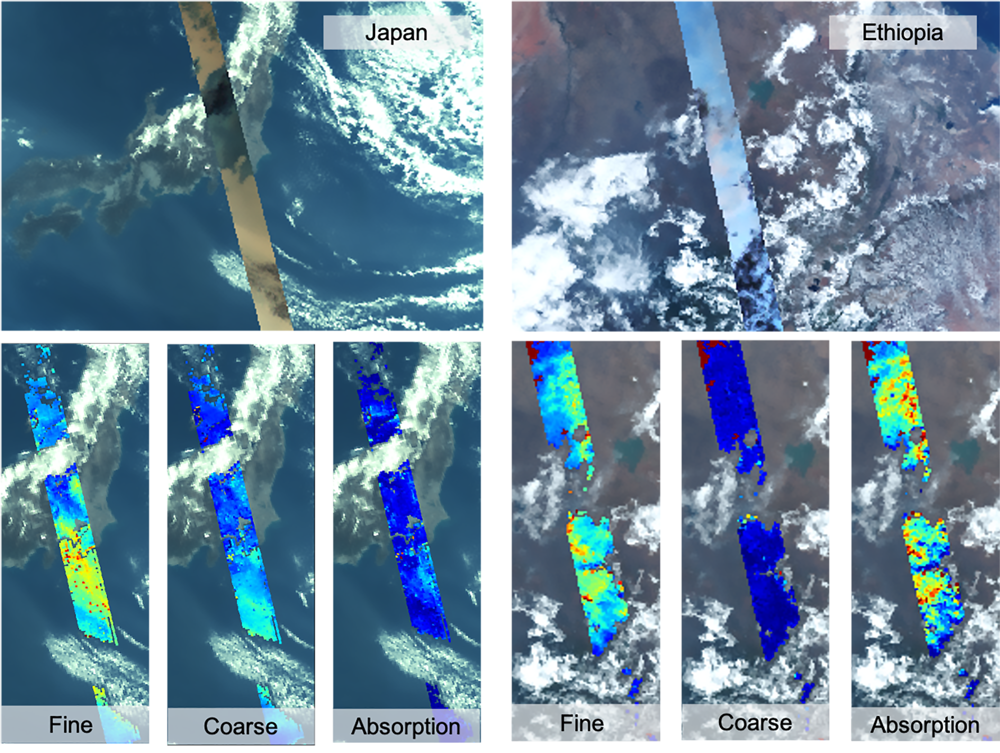
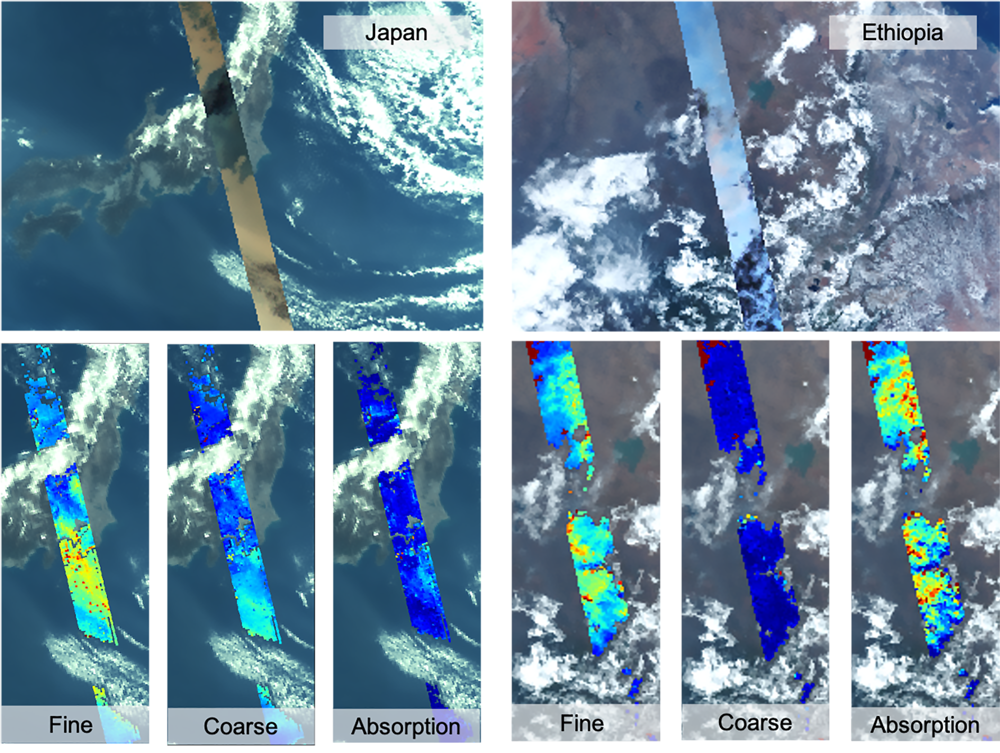

PACE Satellite Mission
PACE Satellite: Monitoring Earth's Oceans and Atmosphere
OCTOBER 5, 2024The Plankton, Aerosol, Cloud, ocean Ecosystem (PACE) satellite is a cutting-edge mission launched by NASA to monitor Earth's oceans and atmosphere. The satellite's primary goal is to study global ocean color, which is vital for assessing the health of marine ecosystems and monitoring ocean biology.
PACE also focuses on aerosols, the tiny particles suspended in Earth's atmosphere, which play a critical role in climate change. By observing clouds and aerosols, PACE helps scientists understand how these elements influence Earth's climate system and interact with solar radiation.
The data collected by PACE supports a wide range of scientific research, from tracking harmful algal blooms in oceans to providing insights into global biogeochemical cycles. This mission is crucial for understanding how oceans respond to climate change and how they, in turn, affect the planet's overall climate.
-
PACE MISSIONS
-

Ocean Color Monitoring
PACE is designed to monitor the color of the oceans, providing valuable data on marine biology, phytoplankton levels, and oceanic ecosystems.
-
 

Cloud and Aerosol Observation
One of PACE's key missions is to track aerosols and clouds, analyzing their impact on Earth's climate by studying how they scatter and absorb sunlight.
-

Tracking Harmful Algal Blooms
PACE provides critical information for monitoring and predicting harmful algal blooms, which can threaten marine life and coastal economies.
-

Studying Global Biogeochemical Cycles
PACE data helps scientists understand the interaction between oceans, the atmosphere, and the global carbon cycle, providing insights into Earth's changing climate.
-